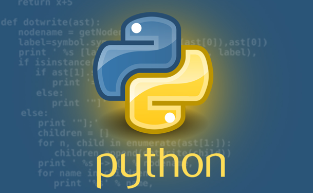
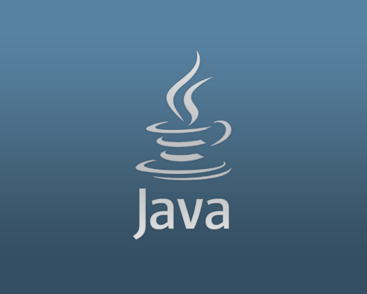
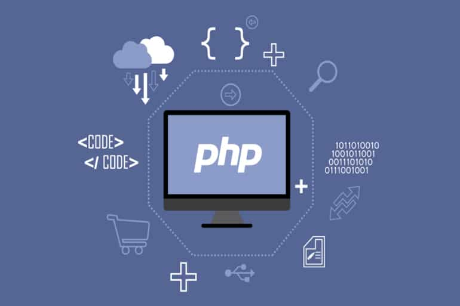
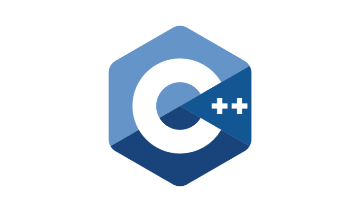
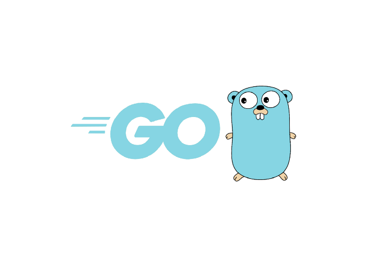
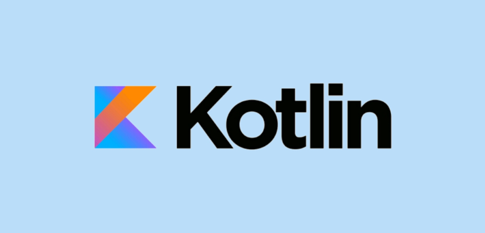

Metic adalah salah satu sub organisasi dari SMK Telkom Malang yang bergerak untuk edukasi khususnya di bidang Teknologi dan Informatika. Metic juga memiliki berbagai kelas untuk mempelajari dan mengembangkan bakat dan minat siswa. Terdiri dari kelas Web Design, Graphic Design, Desktop Programming, Networking, dan Video Editing.
Bahasa Pemrograman Populer Di Tahun 2021
JavaScript
Jenis bahasa yang populer di 2021 yang pertama adalah bahasa JavaScript. JavaScript atau JS adalah bahasa pemrograman yang digunakan dalam pengembangan situs web agar lebih dinamis dan interaktif. Pada tahun 1994 JavaScript mulai dikenal, pada saat itu web dan internet sudah mulai berkembang. JavaScript didesain oleh Brendan Eich yang merupakan karyawan Netscape. Transformasi nama JavaScript, dimulai dari Mocha, Mona, LiveScript , hingga akhirnya resmi bernama JavaScript. Bahasa ini adalah bahasa yang paling banyak digunakan oleh developer di dunia yaitu sekitar 69,7 %. Seperti yang sudah Anda ketahui, sebenarnya bahasa pemrograman ini dikembangkan untuk web front end. Namun ternyata, pada saat ini back end juga bisa menggunakan framework dari JavaScript. Menurut bitdegree, jenis bahasa pemrograman ini bisa digunakan untuk pengembangan games, aplikasi mobile, serta apilikasi web dan server.

Python
Bahasa pemrogramen yang populer di tahun 2021 selanjutnya adalah bahasa Python. Python adalah bahasa pemrograman interpretatif multiguna. Python lebih menekankan pada keterbacaan kode agar lebih mudah untuk memahami syntax, tidak seperti bahasa lain yang sulit untuk dibaca dan dipahami. Bahasa ini muncul pertama kali pada tahun 1991, dirancang oleh seorang bernama Guido van Rossum. Sampai saat ini Python masih dikembangkan oleh Python Software Foundation. Bahasa Python mendukung hampir semua sistem operasi, bahkan untuk sistem operasi Linux, hampir semua distronya sudah menyertakan Python di dalamnya. Alasan mengapa bahasa pemrograman ini banyak digunakan oleh para developer adalah bahasa pemrograman yang cepat dan efektif, mudah dipelajari dan diaplikasikan, bersifat open source dan cross platfrom, serta memiliki banyak library. Bahasa pemrograman ini bisa digunakan untuk pengembangan website, IoT, data, machine learning, serta juga pengembangan game.

Java
Bahasa pemrograman ke tiga yang populer di tahun 2021 adalah bahasa pemrograman Java. Java adalah salah satu bahasa khusus untuk pemrograman yang dijalankan pada berbagai macam jenis platform, dari perangkat komputer hingga perangkat mobile. ahasa ini awalnya dibuat oleh James Gosling saat masih bergabung di Sun Microsystems, yang saat ini merupakan bagian dari Oracle dan dirilis tahun 1995. Bahasa ini banyak mengadopsi sintaksis yang terdapat pada C dan C++ namun dengan sintaksis model objek yang lebih sederhana serta dukungan rutin-rutin aras bawah yang minimal. Meskipun tidak menjadi urutan pertama pada bahasa populer di tahun 2021, tetapi faktanya tetap termasuk salah satu bahasa pemrograman populer. Kemungkinan salah satu penyebabnya adalah pengembangan aplikasi di Android Studio yang menggunakan Java.
C# (See Sharp)
Bahasa pemrograman yang populer selanjutnya adalah bahasa C# atau yang biasa disebut dengan See Sharp. C# merupakan sebuah bahasa pemrograman yang berorientasi objek yang dikembangkan oleh Microsoft sebagai bagian dari inisiatif kerangka NET Framework. Bahasa pemrograman ini dibuat berbasiskan bahasa C++ yang telah dipengaruhi oleh aspek-aspek ataupun fitur bahasa yang terdapat pada bahasa-bahasa pemrograman lainnya seperti Java, Delphi, Visual Basic, dan lain-lain dengan beberapa penyederhanaan. Bahasa pemrograman yang satu ini penting untuk dipelajari, khususnya oleh para pemula. Sebabnya adalah bahasa pemrograman ini mudah dan modern, ada komunitas yang cukup besar, banyak digunakan untuk pengembangan aplikasi desktop dan web, serta juga penting untuk pengembangan aplikasi game.
TypeScript
Bahasa pemrograman populer di tahun 2021 urutan ke-5 adalah bahasa pemrograman TypeScript. Typescript adalah bahasa pemrograman berbasis JavaScript yang menambahkan fitur strong-typing & konsep pemrograman OOP klasik ( class, interface) . Di dalam dokumentasinya, TypeScript disebut sebagai super-set dari JavaScript, artinya semua kode JavaScript adalah kode TypeScript juga. Bahasa pemrograman ini menawarkan class, module, dan interface yang membuat developer bisa mengembangkan aplikasi kompleks dengan lebih mudah. Hal inilah yang membedakannya dengan javascript. Bahasa pemrograman ini dikembangkan dan dikelola oleh Microsoft. Keunggulan dari bahasa pemrograman ini adalah pemrograman berorientasi objek, tidak membutuhkan runtime plugin, serta juga meningkatkan performa tim.

PHP
Bahasa pemrograman PHP merupakan salah satu bahasa yang cukup populer di tahun 2021. Hingga kini, bahasa pemrograman PHP juga masih banyak digunakan oleh para developer di berbagai negara. PHP adalah bahasa skrip yang dapat ditanamkan atau disisipkan ke dalam HTML. PHP banyak dipakai untuk memprogram situs web dinamis. PHP dapat digunakan untuk membangun sebuah CMS. Tidak hanya berjalan melalui peladen web, PHP juga bisa menyelesaikan tugas-tugas pemrograman dalam bentuk antarmuka baris perintah (CLI). Keunggulan dari bahasa pemrograman PHP yaitu bahasa pemrograman yang mudah dipahami, materi belajar yang melimpah, kecepatan tinggi, open source, tersedia berbagai pilihan database, comparible dengan HTML, serta juga multi platform.

C++
Bahasa pemrograman yang populer selanjutnya adalah bahasa pemrograman C++. C++ adalah bahasa pemrograman komputer yang dibuat oleh Bjarne Stroustrup, yang merupakan perkembangan dari bahasa C dikembangkan di Bell Labs (Dennis Ritchie). Pada awal tahun 1970-an, bahasa itu merupakan peningkatan dari bahasa sebelumnya, yaitu B. Bjarne Stroustrup pada Bell Labs pertama kali mengembangkan C++ pada awal 1980. Untuk mendukung fitur-fitur pada C++, dibangun efisiensi dan sistem support untuk pemrograman tingkat rendah (low level coding). Pada C++ ditambahkan konsep-konsep baru seperti class dengan sifat-sifatnya seperti inheritance dan overloading.Salah satu perbedaan yang paling mendasar dengan bahasa C adalah dukungan terhadap konsep pemrograman berorientasi objek (object-oriented programming). Para programmer menggunakan bahasa pemrograman ini dibeberapa bidang yaitu mulai dari bidang software, game, hingga sistem keamanan informasi.
C
Bahasa pemrograman populer di tahun 2021 yang selanjutnya adalah bahasa C. Bahasa C merupakan sebuah bahasa pemrograman komputer yang bisa digunakan untuk membuat berbagai aplikasi (general-purpose programming language), mulai dari sistem operasi (seperti Windows atau Linux), antivirus, software pengolah gambar (image processing), hingga compiler untuk bahasa pemrograman, dimana C banyak digunakan untuk membuat bahasa pemrograman lain yang salah satunya adalah PHP. Bahasa pemrograman C dibuat pertama kali oleh compiler untuk bahasa pemrograman pada tahun 1972. Saat itu Ritchie bekerja di Bell Labs, sebuah pusat penelitian yang berlokasi di Murray Hill, New Jersey, Amerika Serikat. Ritchie membuat bahasa pemrograman C untuk mengembangkan sistem operasi UNIX. Sebelumnya, sistem operasi UNIX dibuat menggunakan bahasa assembly (assembly language). Akan tetapi bahasa assembly sendiri sangat rumit dan susah untuk dikembangkan. Dengan bahasa C inilah sistem operasi UNIX ditulis ulang. Pada gilirannya, UNIX menjadi dasar dari banyak sistem operasi modern saat ini, termasuk Linux, Mac OS (iOS), hingga sistem operasi Android.

Go (Golang)
Bahasa selanjutnya adalah bahasa pemrograman Go atau Golang. Bahasa Go atau Golang adalah bahasa pemrograman yang dibuat di Google pada tahun 2009 oleh Robert Griesemer, Rob Pike, dan Ken Thompson.[9] Go adalah bahasa pemrograman yang mudah, sederhana, efisien dan open source. Selain itu, Go memiliki level yang sama dengan Java. Bahasa pemrograman ini dihimpun dan diketik dalam bahasa C, dengan fitur pengumpulan sampah, penulisan terstruktur, keamanan memori, dan pemrograman yang konkuren serta berurutan.

Kotlin
Bahasa pemrograman populer tahun 2021 yang ke-10 adalah bahasa pemrograman kotlin. Kotlin adalah sebuah bahasa pemrograman dengan pengetikan statis yang berjalan pada Mesin Virtual Java ataupun menggunakan kompiler LLVM yang dapat pula dikompilasikan kedalam bentuk kode sumber JavaScript. Pengembang utamanya berasal dari tim programer dari JetBrains yang bermarkas di JetBrains. Meskipun syntaxnya tidak kompatibel dengan bahasa Java, Kotlin didesain untuk dapat bekerja sama dengan kode bahasa Java dan bergantung kepada kode bahasa Java dari Kelas Pustaka Java yang ada, seperti berbagai framework Java yang ada. Bahasa ini mulai populer di beberapa tahun belakang. Salah satu penyebab populernya adalah karena Kotlin dijadikan sebagai bahasa resmi untuk mengembangkan aplikasi android dengan menggunakan IDE Android Studio.